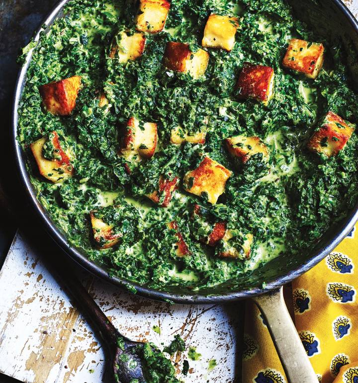

Mimi's Saag Paneer

Final cooked dish
Ingredients
- Spinach
- Paneer
- Coconut Milk
- Button Mushrooms
- Medium Size Yellow Onion
- Extra Firm Tofu
- Soy Sauce
- Serrano Pepper
- Garlic
- Ginger
- Cumin
- Coriander
Steps
- Place spinach into food processor in batches and pulse until all spinach is finely chopped. Set aside.
- Cut half a block of tofu into 1 inch triangles. Place all triangles flat on cutting board and cover with a kitchen towel. Place heavy pan or object on top and let sit for at least 10 minutes to drain some of the liquid.
- Cut paneer into equally sized rectangles, about 1 inch long. Set aside.
- Dice whole onion into 0.25 in squares and set aside. Roughly chop about a cup of mushrooms and set aside with onions.
- Cut off top of serrano pepper and discard. Slice length-wise down the middle and remove and discard all seeds. Finely chop and set aside. Chop 2-3 cloves of garlic and a knob of ginger, and set aside with the pepper.